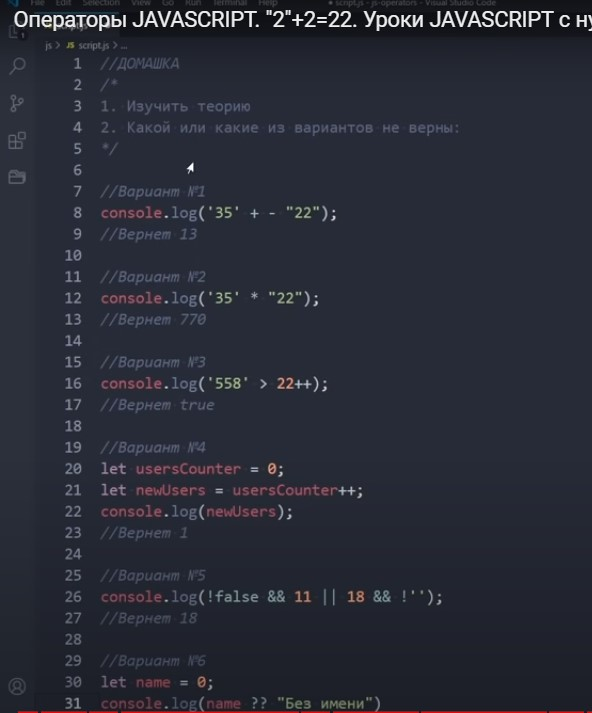
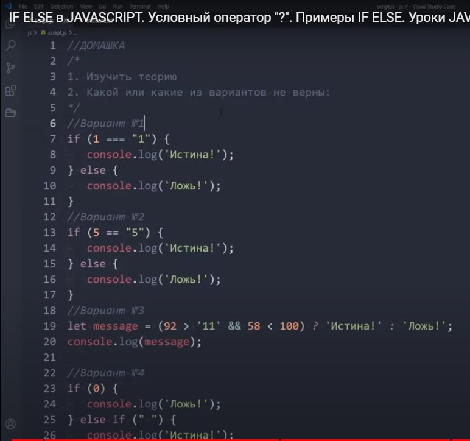
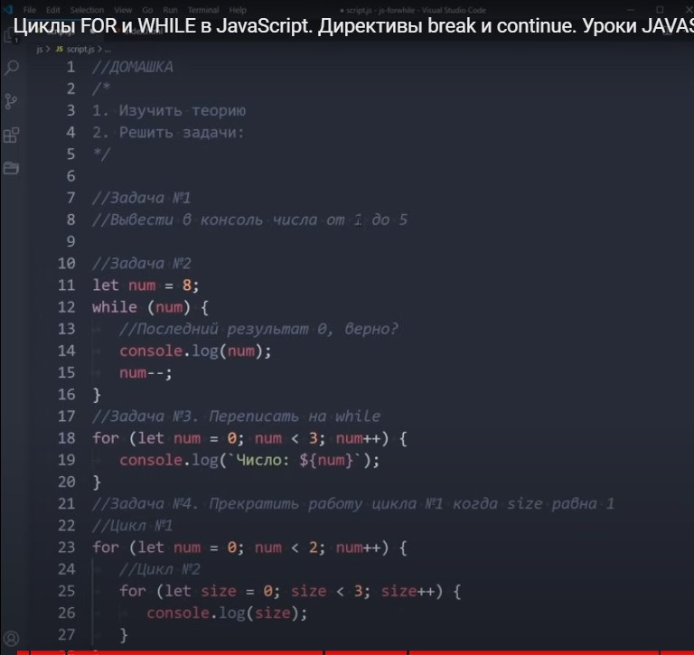
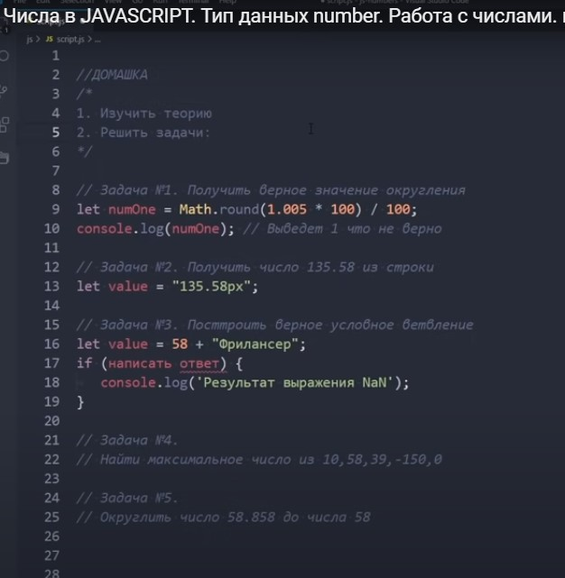
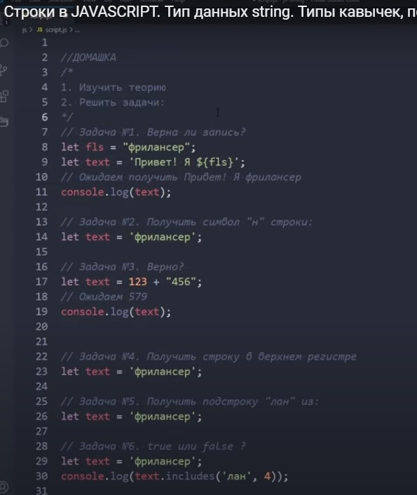

- 1. не вірно, унарний оператор треба щоб стояв перед потрібним числом (тип рядковий) , щоб він перетворився в числовий тип данних.
- 2. Вірно
- 3. Не вірно, рядок не порівнюється із числом з інкрементом, просто з числом можна
- 4. Не вірно. Бо записано інкремент постфіксної форми
- 5. Не вірно. || - шукає true, яещо перший вираз true, то його і виводить, спочатку виконались оператори && - бо вони мають більшу пріорітетність
- 6. Поверне значення "0", бо name не undefined

- 1. Виведе значення "Не правда" , бо при строгому порівнянні рядок не дорівнює цифрі
- 2. Отримаємо значення "Правда", бо при не строгому порівнянні рядок перетворюється у цифру та порівнюється із циврою.
- 3. Правда
- 4. Виведе Правда, бо 0 - це false, тож перевіряється наступна умова, рядок в якому лише пробіл повертає true, тож код цієї умови виконується

- 1. Дивись консоль
- 2. Ні, останній результат 1, бо цикл завершується коли num=0 і виходить з циклу, не виконуючи тіло цикла
- 3. Дивись консоль
- 4. Також дивись консоль ;)

Дивись відповіді у консолі та у коді JS

- 1. Ні не вірно, потрібно записувати у таких лапках вираз ``
- 2. Дивись у консолі
- 3. Отримаємо рядок 123456, а не число 579
- 4. Дивись у консолі та коді
- 5. Дивись у консолі та коді
- 6. Поверне false, тому що у слові буква "л" стоїть на позиції 3, рахунок позицій починається з 0